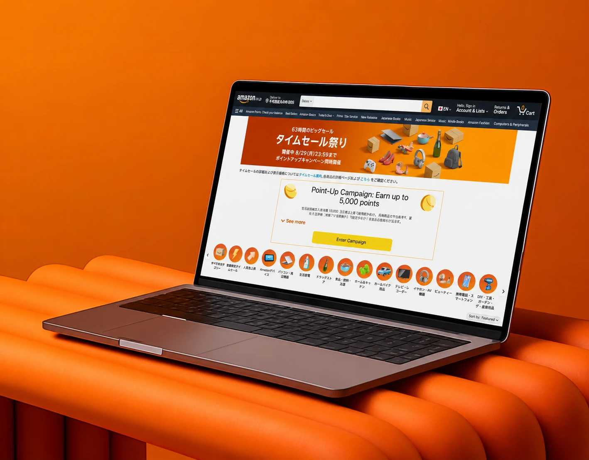
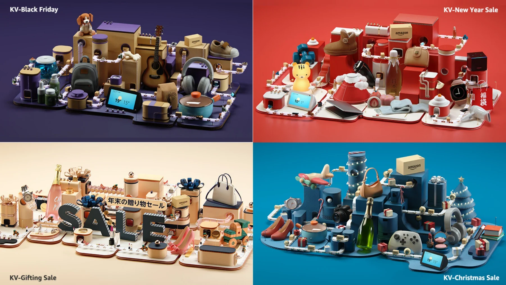
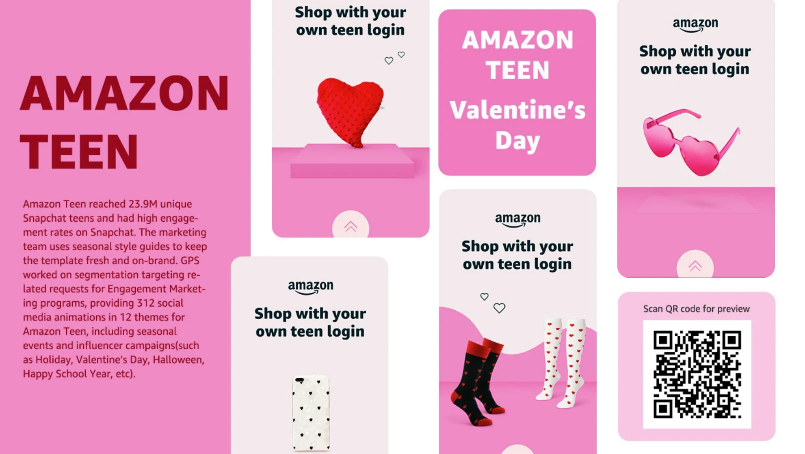

Visual work
Art direction, campaigns,
and visual expression.

Amazon Japan
Art direction and localized experiences for Amazon Japan.
Amazon Japan · Monthly Deal Event art direction and localization. View case study.

Valor × Prime Day
A fresh food campaign for Japan, with poster design and in-store applications.

Japan event campaigns
Japanese campaign pages and banners, adapted across desktop and mobile.

Holiday campaigns
Seasonal art direction for Amazon Japan.

Prime campaigns
Prime campaign graphics across web and mobile.
Social media campaigns
Campaign graphics designed for social media.

Motion design
Selected campaign storyboards and animation frames.

Amazon Luna
Gaming campaign artwork across web and mobile.